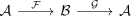
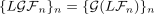

left derived functor for a composition with an exact functor
1. Proposition
Let  be abelian categories,
be abelian categories,

be left exact functors where  is also exact.
Suppose
is also exact.
Suppose  admits a left derived functor, then the left derived functor of the composition is given by
admits a left derived functor, then the left derived functor of the composition is given by
